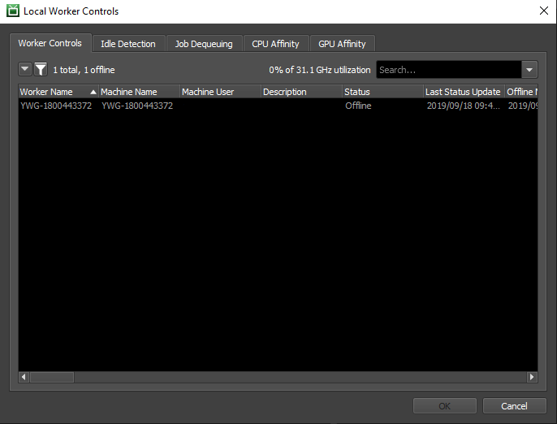
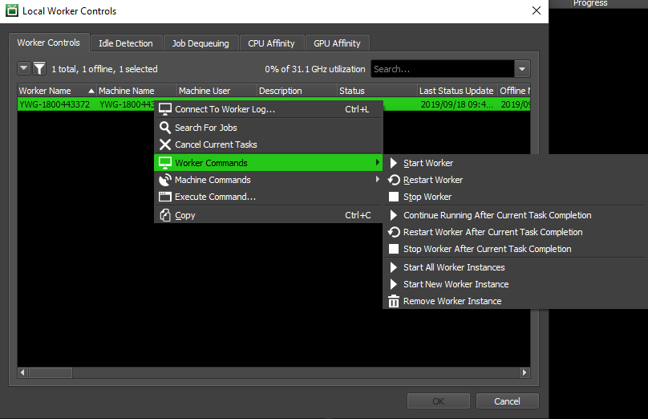
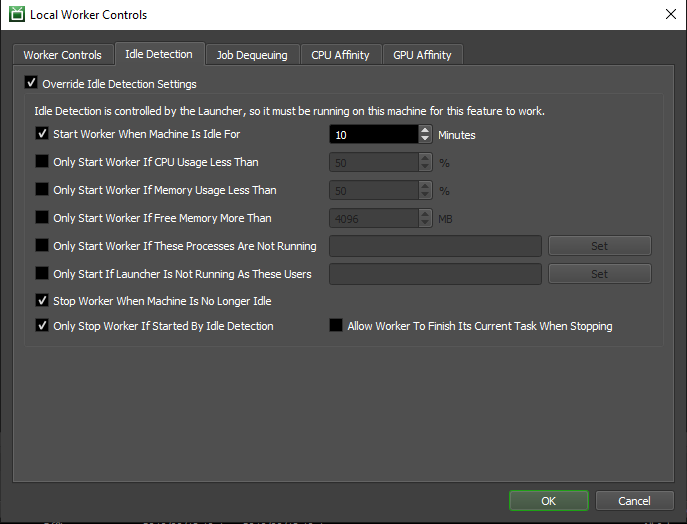
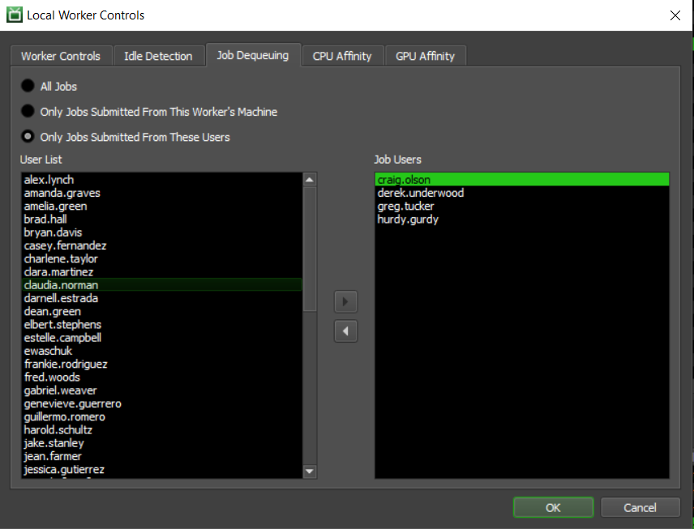
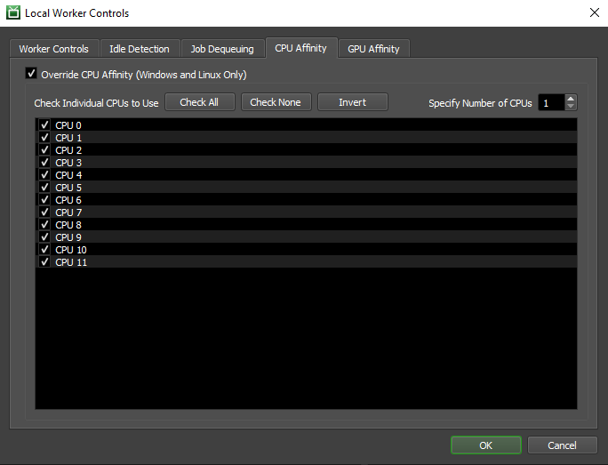
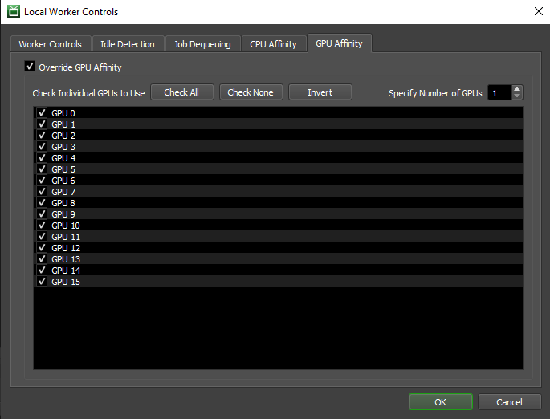

Local Worker Controls¶
Overview¶
The Local Worker Controls allow you to control the Worker on your machine, as well as configure Idle Detection and the Job Dequeueing Mode. You can access the Local Worker Controls from the Launcher’s menu, or from the Tools menu in the Monitor.
Note that it is possible for Administrators to disable the Local Worker Controls. If that’s the case, you will see the following message when trying to open them.
You are not part of a User Group that has access to this Feature at this time, please see your system administrator for more details.
Worker Controls¶
This section allows you to view the state of the Worker running on your machine. Also, if the Worker is rendering, you can see which job it is currently rendering in the list. Finally, you can control the Worker on you machine by right-clicking on them in the list.
More information about the available controls can be found in the Remote Control documentation.
Override Idle Detection¶
This section overrides the global Worker Scheduling settings for your machine (if there are any). It can be used to start the Worker when your machine becomes idle (based on keyboard and mouse activity), and stop the Worker when the machine is in use again. Note that Idle Detection is managed by the Launcher, so it must be running for this feature to work.
The available Idle Detection settings are as follows:
Start Worker When Machine Is Idle For: This option enables Idle Detection, and you can specify the number of minutes without keyboard, mouse or tablet activity before the Worker should start.
Only Start Worker If CPU Usage Less Than: If enabled, the Worker will only start if the machine’s CPU usage is less then the given value.
Only Start Worker If Memory Usage Less Than: If enabled, this will override the global settings. The Worker will only start if the machine is using at least this much memory.
Only Start Worker If Free Memory More Than: If enabled, the Worker will only start if the machine has this much free memory available.
Only Start Worker If These Processes Are Not Running: If enabled, the Worker will not start if any of the listed processes are running.
Only Start Worker If Launcher Is Not Running As These Users: If enabled, the Worker will not start if the Launcher process is running as any of the listed users.
Stop Worker When Machine Is No Longer Idle: If enabled, the Worker will automatically stop when there is keyboard, mouse or tablet activity again.
Only Stop Worker If Started By Idle Detection: If enabled, the Worker will only be stopped when the machine is no longer idle if that Worker was originally started by Idle Detection. If the Worker was originally started manually, it will not be stopped.
Allow Worker To Finish Its Current Task When Stopping: If enabled, the Worker will finish its current task before stopping when the machine is no longer idle. If disabled, the Worker wil requeue its current task before stopping so that another Worker can render it.
There are some limitations with Idle Detection depending on the operating system:
On Windows, Idle Detection will NOT work if the Launcher is running as a service. This is because the service runs in an environment that is separate from the Desktop, and has no knowledge of any mouse or keyboard activity.
On Linux, the Launcher uses X11 to determine if there has been any mouse or keyboard activity. If X11 is not available, Idle Detection will NOT work. One such situation is when the launcher is run as a daemon.
Job Dequeueing Mode¶
This section can be used to control how your Worker dequeues jobs.
The available dequeueing modes are:
All Jobs: This is the default behavior. The Worker will dequeue any job that it can work on.
Only Jobs Submitted From This Worker’s Machine: This option will only allow the Worker to dequeue jobs submitted from the same machine. This is a useful way of ensuring that your Worker will only render your jobs.
Only Jobs Submitted From These Users: This option will only allow the Worker to dequeue jobs submitted by the specified users. This is another way of ensuring that your Worker will only render your jobs. However, it can also be used to make your Worker render jobs from other specific users, which is useful if you’re waiting on the results of those jobs.
CPU Affinity¶
This section can be used to control the CPU affinity of your Worker. See Worker Configuration for more information on Worker CPU affinity.
GPU Affinity¶
This section can be used to control the GPU affinity of your Worker. See Worker Configuration for more information on Worker GPU affinity.

{kind=link}
{kind=link}
{kind=link}
{kind=link}
{kind=link}
{kind=link}